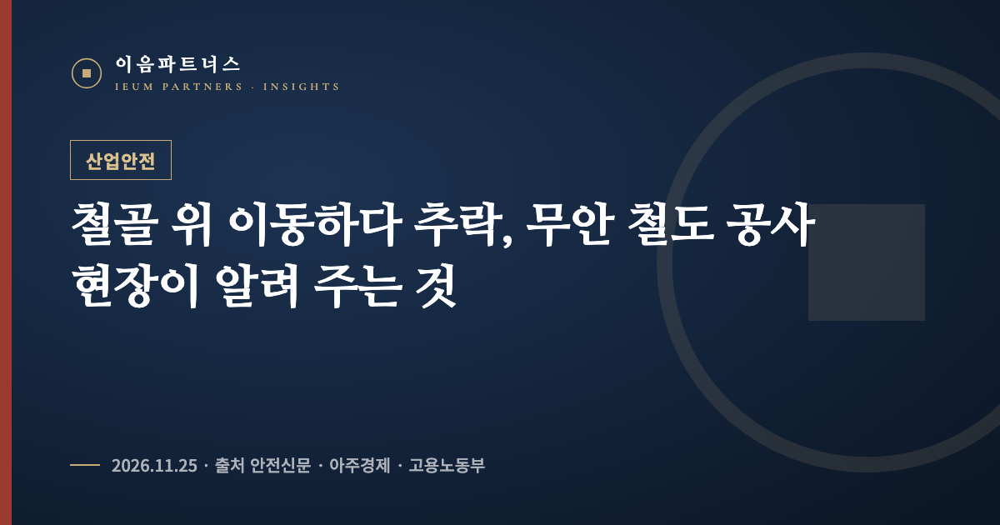

철골 위 이동하다 추락, 무안 철도 공사 현장이 알려 주는 것

2026년 11월 25일 오후, 전남 무안의 호남고속철도 공사 현장에서 60대 노동자가 철골 위를 이동하다 떨어져 숨졌습니다. 높은 곳의 철골 구조물을 오가는 작업은 철도·도로 공사뿐 아니라 공장 증축이나 설비 공사에서도 흔합니다. 이 글에서는 사고 내용과 같은 사고를 막는 기본 수칙, 대표님이 확인할 점을 정리합니다.
철골 위 작업은 안전시설을 먼저 갖추는 것이 기본 수칙으로 정해져 있는 만큼, 공사를 맡기는 회사도 함께 점검해 볼 필요가 있습니다. 우리 회사 현장이나 외주 공사의 안전 관리가 걱정되신다면 카카오톡 채널 이음파트너스에서 함께 짚어 볼 수 있습니다.
무슨 일이 있었나
사고는 호남고속철도 2단계 제7공구 공사 현장에서 일어났습니다. 노동자는 구조물 해체를 위해 흙막이 가시설(땅을 팔 때 흙이 무너지지 않게 임시로 세운 구조물)의 H빔 위를 이동하다 바닥으로 떨어졌고, 응급실로 옮겨졌으나 치료 중 숨졌습니다(안전신문). 보도에 따르면 떨어진 높이는 약 10m였습니다(아주경제).
광주지방고용노동청 목포지청은 흙막이 지보공과 가시설 공사 작업 전체에 부분 작업중지 명령을 내렸습니다. 경찰과 노동당국은 정확한 경위와 산업안전보건법·중대재해처벌법 위반 여부를 조사하고 있습니다.
같은 유형의 사고, 지난달에도 있었습니다
고용노동부가 공개한 2026년 10월 중대재해 사이렌 자료에도 비슷한 사고가 실려 있습니다. 10월 9일 충북 음성의 공장 신축 현장에서 철골 상단을 이동하며 볼트를 조이던 노동자가 상부 철골에 부딪혀 떨어져 숨졌습니다(고용노동부 중대재해 사이렌).
두 사고 모두 철골 위를 걸어서 옮겨 다니던 중에 일어났습니다. 본 작업을 하는 자리뿐 아니라 이동하는 길에도 추락 방지 조치가 필요하다는 점을 보여 줍니다.
어떻게 막을 수 있나
철골 위 작업의 기본은 추락방호망입니다. 안전신문은 동종 재해를 막기 위한 의무 수칙으로 “철골 상부 등 추락 위험 장소에서 작업 시 추락방호망을 설치한 후 작업해야 한다”는 점을 짚었습니다(안전신문). 방호망 설치가 어렵다면 안전대 부착설비를 설치하고, 작업자가 안전대를 착용한 뒤 안전고리를 실제로 걸었는지까지 확인해야 합니다.
고용노동부도 같은 수칙을 안내하면서, 사업주가 작업자에게 안전대를 지급하고 체결하도록 관리·감독해야 한다고 강조합니다. 장비를 나눠 주는 데서 끝내지 않고 실제로 쓰는지 확인하는 것이 관리의 핵심입니다.
대표님이 지금 확인할 것
- 높은 곳의 철골·빔 위를 오가는 작업이 있는지, 있다면 추락방호망을 먼저 설치하는지
- 방호망이 어려운 구간에 안전대 부착설비가 있고, 안전고리 체결을 누가 확인하는지
- 해체처럼 짧게 끝나는 작업도 시작 전에 위험 요인을 따져 보는지
- 외주·하청 작업이라도 원청으로서 안전조치 이행을 점검하고 기록하는지
참고한 자료
- 무안 철도공사 삼부토건 현장서 노동자 추락사… 가시설 공사 작업중지 — 안전신문 (2026.11.26)
- 무안 KTX 공사장서 60대 작업자 추락사…노동당국 조사 — 아주경제 (2026.11.25)
- '26년 10월 중대재해사이렌(오픈채팅방) 자료 공개 — 고용노동부 (2026.11.02)
우리 현장의 고소 작업 관리 체계를 점검해 보고 싶으시다면 카카오톡 채널 이음파트너스로 문의해 주세요.
※ 이 글은 일반적인 정보 제공을 위한 것으로, 개별 사안은 세무사·노무사 등 전문가와 함께 확인하시기 바랍니다.